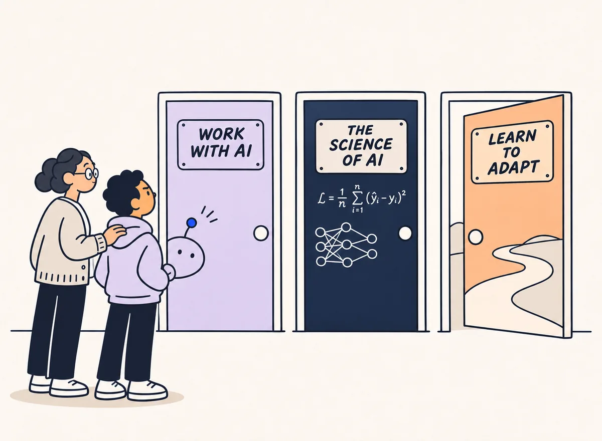
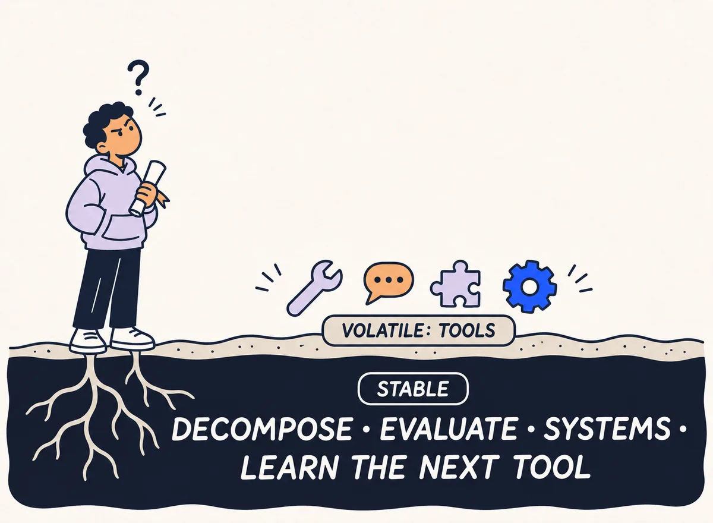
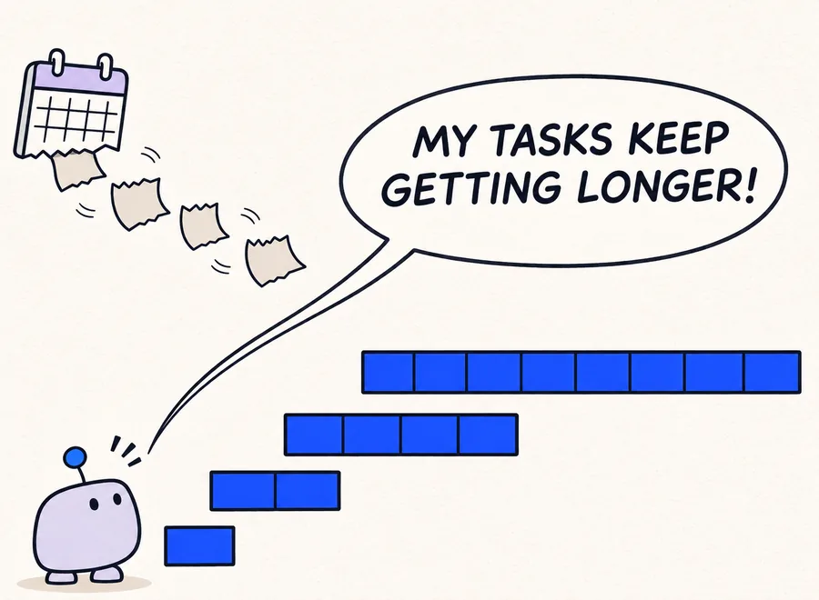
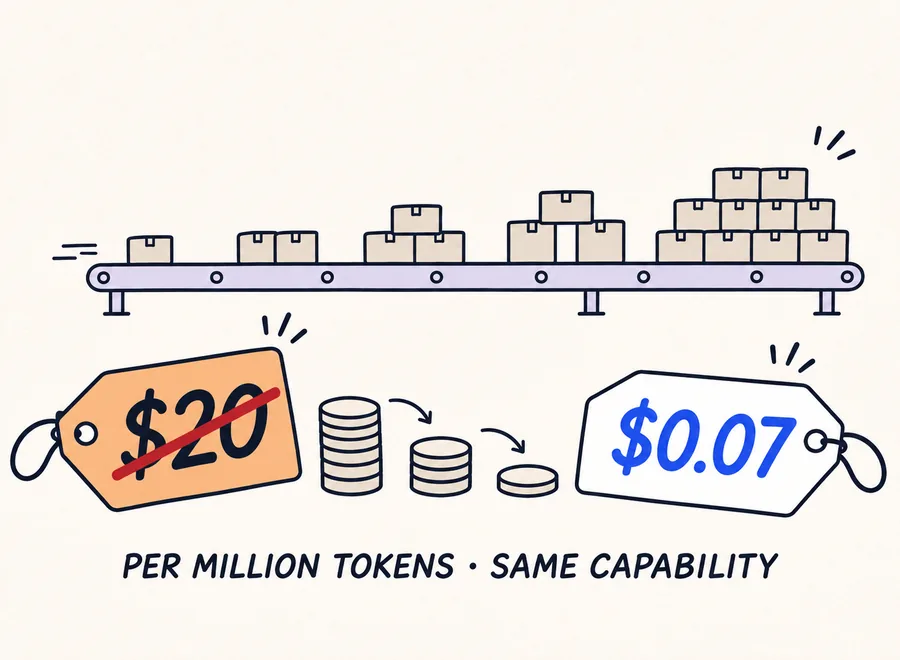
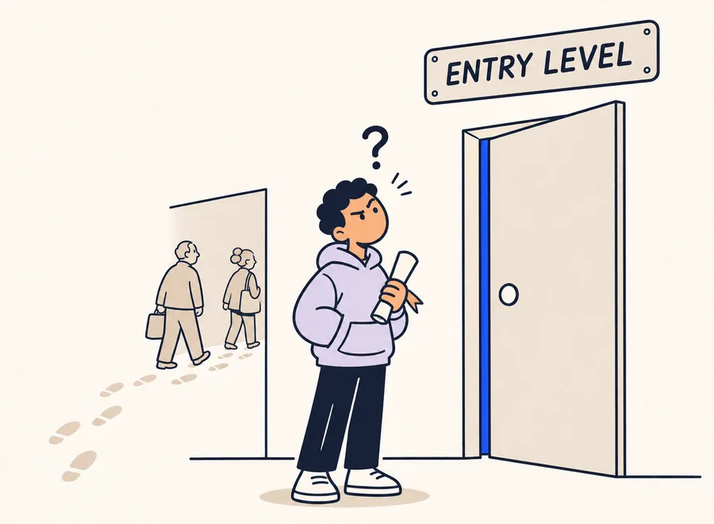
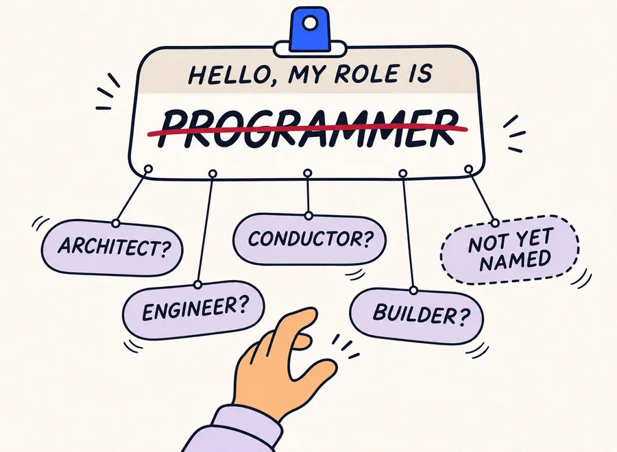
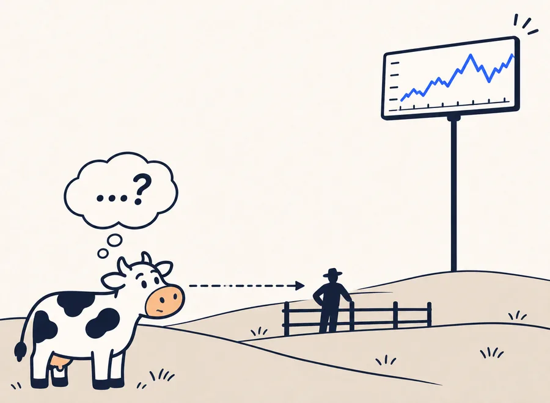
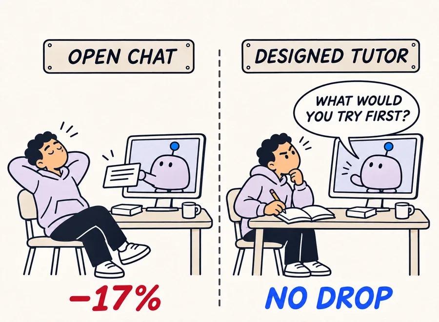
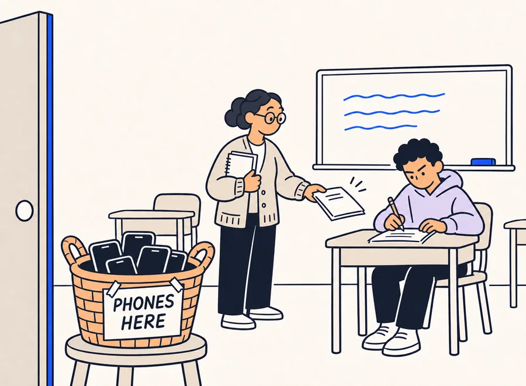
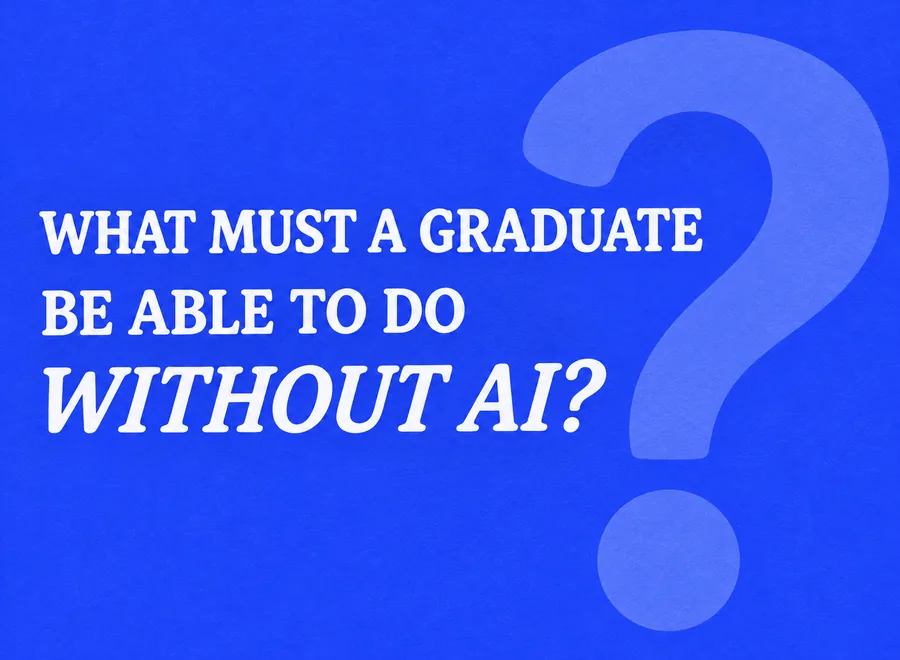

AI, work and technology education. A map of the evidence, and the questions it leaves open.
What should a sixteen-year-old learn today, when the tools change every few months? We spent a year reading about AI, work and technology education to sit with that question properly. This page shares what we found, where Israel stands, and the questions we are still arguing about. It won’t hand you answers. It should help you ask better ones.
Research and synthesis by Aviram Weisberg, developed at Be’Netivei Udi (BU) for a strategic discussion on the future of youth technology education in Israel.
LISTEN · AUDIO VERSION
The synthesis as a two-voice conversation
0:00 / —Opening
~190sources read and sorted
3axes that organise them
6discussion windows from the room
0recommendations, on purpose
THE STRUCTURE OF THIS PAGE · FROM EVIDENCE TO QUESTIONS
Start anywhere. Each layer builds on the one before, from what the evidence says to what it leaves open. One honest warning: every number here is a snapshot, and forecasts in this field have missed in both directions.
IN ONE MINUTEThree axes, one picture
Almost everything we read lands on one of three axes. They pull on each other: faster tools reshape jobs, and both nudge education back toward skills that outlive any tool. Each axis ends where the real conversation starts, with a question.
How this synthesis is organised. We proceed in five movements. Section 1 asks what is happening to the first rung of technical work. Section 2 asks how fast the tools are changing, and why that speed matters more for a curriculum than any single capability. Section 3 turns from labour markets to learning itself. Section 4 reads Israel’s recent education decisions against that picture, and Sections 5 and 6 bring it back to the room: the tensions we argued about, and the three ways the underlying question can be framed.
Throughout, we try to keep three kinds of statements apart: what was measured (controlled studies, large datasets), what was reported (companies, surveys, journalism), and what we interpret. Numbered references link to the full source list at the end of the page.
1 · AXIS ONE · PROFESSIONSThe first step in is changing
Software jobs aren’t vanishing. What’s changing is the first step in. The work juniors used to learn on is increasingly done by tools, and employers are asking for something else: people who can frame a problem, check the output and own the result.
FIGURE 1
AI skills went from rare to routine in a year of job ads
Source: FrogHire, 20.7 million job ads, 20261. A rise in ads is not yet a rise in hiring.
Signal
What it shows
Source
−13%
Relative employment drop for ages 22–25 in AI-exposed occupations (late 2022 → mid 2025), while older workers in the same jobs held steady or grew.
Of workers’ core skills employers expect to change by 2030. Analytical thinking (69% of employers) and resilience, flexibility and agility (67%) top the core list.
An AI company is an unusual employer, but it can work as a leading indicator. In October 2026 Anthropic published an analysis of its own employment data, AI-agent telemetry, hiring records and 17 employee interviews. The pattern matches the first-rung signal above, from the inside.
FIGURE 1B
Juniors thin out where agents do the implementation
Hours worked by employee-directed AI agents per employee hour by August 2026. Code commits per engineer ran about 5× their level six months earlier, with no measurable rise in reverted code.
Share of employees’ AI sessions spent on “meta-work”: writing specs for agents, reviewing their output, monitoring pipelines. Reading all agent output would take over half the work week even for non-technical staff.
Growth in how often hiring managers mention a candidate’s creative use of AI tools in technical assessments (2024 → 2026). Comments on autonomy and judgment rose most; domain expertise shrank as a share of assessment.
The report also names a tension that belongs in an education discussion: as employees automate their own tasks, some are “increasingly removed from the object-level work that originally built their skills”. Employment protections for incumbents, the authors note, do not help those who are not hired to begin with.
Across these sources, the skills that show up more often are a recognisable set: breaking a problem down and specifying it in writing, judging AI output for correctness and safety, understanding a system end to end, and holding a product decision. “Programmer” describes less and less of the work. Architect, engineer, conductor and builder are all on the table; none has won.
What this does not say. The labour data is descriptive, not causal: interest rates, post-pandemic correction and AI move together. Company figures describe one company. Rising demand in ads is not yet rising demand in hiring.
Open questions
What does a graduate know that a domain expert with AI tools doesn’t, and the other way round?
If the first role demands more, what counts as “ready for a first job” in 2028?
Which skills are best learned on the job, and which must arrive ready from a program?
Is a new job title a rebrand, or a change in what we teach and assess?
If employers weigh judgment over implementation, how do young people build judgment when the implementation work that used to train it is done by agents?
Where this leadsIf the entry point into work is shifting, the next question is how quickly. That matters for education in a specific way: a curriculum is a long-cycle instrument. Section 2 asks whether the cycle of the tools has become shorter than the cycle of schooling.
2 · AXIS TWO · PACE AND RADIUSFaster than the instruments
The tools are moving faster than our ability to measure them, let alone teach them. That speed, more than any single breakthrough, is what makes planning feel so hard.
FIGURE 2
One syllabus cycle, about seven times the capability
Calculated from METR’s9 measured doubling time of 4.3 months for the length of tasks models complete alone (Time Horizon 1.1, 2026): 212/4.3 ≈ 6.9. A trend, not a law; it may slow or speed up.
Signal
What it shows
Source
16 h
Length of expert task the leading model handled alone by May 2026. In 2022 it was about 30 seconds.
The radius is wide. AI contributed to a Nobel in chemistry (AlphaFold), reached gold at the International Math Olympiad and solved open Erdős problems, while its authors note it is stronger at search and construction than at deep insight. In organisations, eight recent incidents shared five structures: permissions as the blast radius, production faster than review, usage pricing with no ceiling, AI outside the fence, and removing the human layer only to rebuild it later. Historian Yuval Noah Harari14 put the deeper worry in one image: cows see the farmer but not the market that decides their lives, and we may come to live inside AI-built financial and legal systems we cannot understand.
What this does not say. Benchmarks measure defined software tasks, not real jobs. Incidents are cases, not failure rates. A metaphor is a lens, not a forecast.
Open questions
If the tool changes several times within one school year, what is stable enough to teach, and what isn’t?
What changes in planning when forecasts themselves are unreliable?
Who is responsible for understanding systems nobody fully built: the user, the organisation, the educator, or no one?
What happens to young people when the first door narrows, and who notices first?
Where this leadsSpeed alone does not tell us what to teach. To move from labour markets to classrooms we need evidence on learning itself: what happens to understanding when AI enters the process. That is the subject of Section 3.
3 · AXIS THREE · MEANINGFUL SKILLSDesign decides, not the model
The learning research is thinner than the hype, but it keeps pointing the same way: what matters is how AI is woven into learning, not which model you pick. And the stronger the machine gets, the more we seem to value what is human, hands-on and verified.
FIGURE 3
The same technology, from large gains to none to harm
Of education systems restrict phones in school (about 24% in 2023). Handwritten exam books, in-person assessment tracks and in-person interviews are returning.
Of university students’ conversations with Claude were “direct”: seeking an answer or a finished output with minimal engagement. Computer-science students were 38.6% of conversations while earning 5.4% of US bachelor’s degrees.
Average transfer from learning to program to other thinking skills; larger for near transfer than far. Generic “brain training” shows little far transfer.
The new OECD–EC framework splits AI literacy into Engage, Create, Manage and Shape AI. It will underpin the first PISA test of media and AI literacy in 2029.
Universities moved first on literacy: Ohio State, Purdue and the Technion now require AI fluency for every student, and none has published outcome data yet. The skills that keep surfacing are older than AI: decomposing problems, evaluating output, understanding systems, domain expertise, and the ability to learn the next tool, which, when tools change every few months, is part of the skill itself.
What this does not say. Most trials are short and small, some are preprints. No published results is not proof of failure. The offline turn is not evidence that offline is better.
Open questions
What must a learner be able to do without AI, and what can safely be left to the tool?
How do we know someone understands, and isn’t just producing: tests, portfolios, defending their code, or a mix?
What do we keep offline on purpose, and can we tell it apart from what is offline by habit?
When the decision comes before the evidence, what makes a program an experiment we can learn from rather than a commitment?
Where this leadsThe three axes describe a global picture. Policy, however, is made locally. Section 4 reads Israel’s recent decisions against that picture, asking not whether they are right, but whom they reach and what they leave undescribed.
4 · THE ISRAELI LENSWhat the system has decided, and what it hasn’t
Israel isn’t waiting. In 2026 the Ministry of Education set AI targets for the whole school system and opened a selective AI major for high school. Those are real decisions. What is still open is who each one is really for, who will teach it, and how we will know it worked.
What has been decided
Decision
What it says
Source
80%
Target share of pupils from grade 4 up with basic AI competence in 2026–27 (“AI for all”). Alongside it: 60% of grade 10–12 students experiencing AI in a matriculation exam, and 70% of teaching staff with basic competence.
Ministry of Education, Strategic focus for 2026–27 (Apr 2026)25
AI1–3
Middle-school computer science: three AI units woven into the existing Python A–C courses, replacing the old track fully by 2028–29. Exam questions involving language models already appear in Python B (grade 8) and C (grade 9).
A new “AI scientists” high-school major: machine learning, deep learning, advanced linear algebra and statistics, Python. Selective: top students with 5-unit maths and English plus a science. First stage about 50 schools. An early report spoke of 10 units.
Teachers planned for the major: about 50 in year one, 200–300 within four years. Partners named include the Weizmann Institute, the Cyber Education Center and Google.
A grade-9 preparatory course for the major in about 50 schools: ML concepts, data in Python, classification and language models, ethics, a final project.
Two published tracks, and a middle no one has described yet
A reading of public documents, not a measured result. The top and bottom layers are published Ministry plans. The middle layer is what the discussion called the missing middle: what most technologically able teenagers get, and who teaches them, has not been described.
What the market around it shows
FIGURE 5
Three Israeli signals, before and after
Sources: Israel Employment Service via Maariv (May 2026)29; Council for Higher Education data as reported (Oct 2026)30, math, statistics and CS, excluding the Open University; OECD, Education at a Glance 202631. Scales differ per chart. None of these is tied causally to AI.
The Israel Innovation Authority32 found three times as many companies saying they cut hiring because of AI adoption, while the same firms still hired 8% and laid off 2.8%: gradual adjustment, not a shock. Placement firms describe a market “not open to juniors”. That is the same first-rung pattern seen in the US data, at Israeli scale.
Where this leadsDecisions on paper become questions in a room. The discussion this synthesis was prepared for worked through a set of deliberate tensions; Section 5 reproduces them as they were posed.
5 · DISCUSSION WINDOWSWhat the room argued about
In the room, we stopped every so often to hold a tension on purpose: two positions, both taken seriously, no rush to settle. Here they are as they were asked, without the room’s conclusions, so you can have the argument yourself.
WINDOW 1 EXPERTISE
The teacher who built an app
A maths teacher builds an adaptive practice app for her class over a weekend, without writing code. What does someone who studied technology know that she doesn’t, and what does she know that they don’t? Who is responsible when pupils’ data leaks?
WINDOW 2 EQUITY
When the bar rises
Beyond “programmer”, who are we prepared to leave behind? And if the graduate is no longer a programmer, what is the name of the person we are preparing: architect, engineer, conductor, builder, or a role that doesn’t exist yet?
WINDOW 3 TIMING
Lead, or wait for the employer?
Everything is moving and the main destination of graduates has not changed what it asks for. Change programs before being asked, or hold the bar accepted today? If AI props weaker learners up, will they feel successful without understanding the logic?
WINDOW 4 FOUNDATIONS
What is worth teaching?
Code without AI until thinking is built, or AI from day one, learning to think through the tool? What must a learner be able to do without it, and who updates the volatile layer, at what pace?
OPEN THREAD ASSESSMENT
Understanding or producing?
How do we know a learner understands and isn’t just producing? Exams, portfolios, defending one’s own code in person, or a mix, and which of these survives at scale?
OPEN THREAD TEACHERS
Who teaches in 2028?
The system plans tens of teachers for a new major while tools change several times in one school year. How are educators prepared, and is the educator now part of the product?
Where this leadsAcross the windows, the same underlying disagreement kept resurfacing in different forms. Section 6 makes it explicit.
6 · THREE FRAMINGSWhat exactly are we teaching?
Underneath every one of those arguments sits a simpler question. When people say “AI education”, they usually mean one of three very different things, each with its own logic, evidence, cost and shelf life. Pulling them apart makes the conversation clearer. Choosing between them is left to you.

Three doors, none of them marked as the right one. The rest of this section describes what lies behind each.
FRAMING A
Teach working with AI
AI as a way of working: using, prompting, delegating, checking and owning what a tool produces, in any subject.
Can every learner use AI well, and know when not to?
In Israel now
“AI for all”: the 80% competence target, AI in matriculation exams, LLM questions in middle-school CS exams.
Elsewhere
OECD–EC Engage, Create and Manage domains; AI-fluency requirements at Ohio State, Purdue and the Technion; Estonia’s school-wide AI Leap.
What the evidence says
Designed use helps; open use can hurt the test without AI. How it is built in decides the effect.
The question it leaves open
How do we avoid teaching an interface that expires, and output without understanding?
FRAMING B
Teach the science of AI
AI as a discipline: how models learn, the maths underneath, data, evaluation, building and shaping systems.
Who will understand, build and question these systems from the inside?
In Israel now
The selective 15-unit AI scientists major and its grade-9 preparatory course, about 50 schools each.
Elsewhere
UNESCO’s33 “AI techniques” and “system design”; the OECD–EC “Shape AI” domain; at least 8 hours of AI a year in Beijing schools from autumn 2025.
What the evidence says
Durable concepts outlast tools, but there are no outcome studies yet for school-level AI majors.
The question it leaves open
Who gets in when selection runs on maths scores, and where do the teachers come from?
FRAMING C
Teach the capacity to adapt
The skills to cope with change at this pace: decomposing problems, judging output, understanding systems, learning the next tool, persisting.
What will still matter after the next three tools?
In Israel now
Present in rhetoric and in some programs, not yet as a measured, assessed strand of the curriculum.
Elsewhere
WEF: 39% of core skills expected to change by 2030; UNESCO’s “human-centred mindset”.
What the evidence says
Mixed. Far transfer from generic training is weak; learning to program transfers moderately (g ≈ 0.49).
The question it leaves open
Can it be taught and assessed on its own, or only through a real domain?
Side by side
A · With AI
B · Science of AI
C · Adapt
The learner leaves with
Fluent, critical use of current tools
Understanding of how AI works and how to build it
Habits of mind that carry to the next tool and job
Who it reaches
Everyone
A selected group
Everyone, in principle
What teachers need
Tool and pedagogy training, refreshed often
Deep subject expertise; scarce
Skill in designing tasks and feedback
How you assess it
Tasks with and without AI
Exams and projects; mature methods
Unclear; portfolios and performance tasks
Shelf life
Months for tools, years for habits
Years for foundations
Longest, if transfer holds

Volatile on top, stable underneath: tools to practise and replace, thinking to teach in depth.
One way to read the three framings is by which layer each feeds. A syllabus updates about once a year; the tools above it move about seven times as far in that time (Figure 2).
The questions that decide the mix
Every real program mixes all three. The disagreement is about proportions and order, and it turns on questions this page leaves open:
For whom? A selective pipeline into technical roles and a universal program for every teenager may need opposite mixes.
In what order? Foundations before the tool, the tool as the way into foundations, or both at once with deliberate “no AI” zones?
Measured how? If framing C cannot be assessed, will it survive the first budget review? If A is assessed only with AI switched on, will anyone notice what is lost?
What this does not say. The three framings are a lens for discussion, not a taxonomy from the literature, and the evidence behind each is uneven. The Israeli decisions are new; none has outcome data yet.
WHERE IT MEETSOne tension, three sides
Each axis feeds the next. Read around the triangle, not down a list. The question in the middle is the one every framing above tries to ask well.
THE SHORT VERSIONAs a comic

01 Every ~4 months, the tasks an AI finishes alone double in length.METR, 2026

02 The same capability got 280× cheaper in two years. Spending still grows.Stanford AI Index, 2025

03 The first door narrows: −13% for ages 22–25 in AI-exposed jobs.Stanford, 2025 · descriptive, not causal

04 Writing code moves to the machine. The job title is up for grabs.Synthesis of job-ad and research data

05 A historian’s image: the cow sees the farmer, not the market that runs her life.Y. N. Harari, Czech TV, Oct 2026 · a lens, not a forecast

06 Same model, different design: open chat hurt the test without AI; a designed tutor didn’t.Bastani et al., PNAS, 2025

07 Meanwhile, learning walks back into the room: 58% of systems restrict phones.UNESCO GEM, 202608 Underneath the churn: tools come and go, the thinking stays.Framing from the synthesis09 Three ways to answer: work with AI, the science of AI, or learning to adapt.Section 6 · none marked as the right one

10 The question we are left with. On purpose, it has more than one good answer.
TRY IT · SELF-RUNPlay the job hunt yourself
In the room, teams raced each other on this. Here you can play it alone: no code, no leaderboard. Twelve minutes on a real job board will tell you more about Axis 1 than any chart on this page.
BU JOB LAB · CTF · SOLO MODE
Spot 2026 in a job board with the dates removed.
A mock Tel Aviv job board of 30 real ads, rewritten and shortened: some from 2019–2021, some from 2026, and some noise. Seven missions ask you to find patterns in what employers want and how they write it. The final boss: a CV for a young graduate that has to pass the board’s ATS.
Shown here at a fixed desktop resolution, scaled to fit. For the full-size version, use “Open full screen”. The interface is in Hebrew; the ads are in English. Nothing you type is sent anywhere in solo mode.
THE TALKThe slides (in Hebrew)
The full talk this synthesis was drawn from, including the deep-dive sections. It is shared with the people who took part in the discussion; enter the access code you received to open it. Use the button in the corner, or press F, for full screen.
Trainee photos, speaker notes and the live game were removed from this version.
ADDENDUMYuval Noah Harari on the cows and the market
In October 2026 the historian Yuval Noah Harari gave a 53-minute interview to Hyde Park Civilizace, the science and ideas programme of Czech public television (Česká televize), with an English version. The talk drew on one metaphor from it; this is a summary of the argument around it.
The metaphor. Cows know humans exist and can see them, but they have no idea money exists. You cannot explain the bond market to a cow, yet it decides what happens to her. In his words: “We are the cows of the future.”
The danger is not robots. He rejects the picture of machines going into the streets to attack people. The shift he describes is quieter: AI gradually taking over the financial system and the bureaucracies that run daily life.
Why there. Administration and finance reward what AI does well: holding and processing enormous amounts of information. No human banker can remember every transaction in a bank; an AI system can.
Where it leads. Such systems could design financial and legal structures more sophisticated than people can follow. Humans would stay inside the system that governs their lives, but without meaningful control over how it works, on a horizon he puts at 10 to 20 years.
It is included as a lens, not as evidence or a forecast. For education it sharpens two questions already on this page: what does it mean to understand a system, as a learning goal rather than a slogan (Framing B), and who is responsible for understanding systems nobody fully built (Axis 2)?
Summary based on the interview as reported by Ctech (Lital Samet, 19 Oct 2026), which quotes it at length; the broadcast itself has no published transcript or subtitles. The player does not allow embedding, so it opens in a new tab.
ABOUT THIS WORKWhere it was made
This research and synthesis were carried out at Be’Netivei Udi (BU), an Israeli nonprofit running national technology-education programs for teenagers, as preparation for an internal strategic discussion held in November 2026.
The views and framings are the author’s and do not represent an official organisational position. Public data is cited as published; internal program details were left out.
SOURCESReferences
Numbers in the text refer to this list, ordered by first mention. Hebrew-language and company sources without a stable public link are listed without one.
Show all 33 references▾
FrogHire (2026). AI Readiness Report: analysis of 20.7 million US job ads.
METR (2026). Time Horizon 1.1; building on Kwa, T., et al. (2025). Measuring AI ability to complete long tasks. arXiv:2503.14499. arxiv.org/abs/2503.14499
Grace, K., et al. (2024). Thousands of AI authors on the future of AI. arXiv:2401.02843; AI Impacts expert surveys; Metaculus forecasts. arxiv.org/abs/2401.02843
Samet, L. (19 Oct 2026). Yuval Noah Harari on AI: “We are the cows of the future”. Ctech; reporting on Harari’s interview in Hyde Park Civilizace, Česká televize (Oct 2026). www.calcalistech.com/ctechnews/article/jp9hpl0rh
Kestin, G., Miller, K., Klales, A., Milbourne, T., & Ponti, G. (2025). AI tutoring outperforms in-class active learning: an RCT introducing a novel research-based design in an authentic educational setting. Scientific Reports. doi.org/10.1038/s41598-025-97652-6
De Simone, M., Tiberti, F., Barron Rodriguez, M., Manolio, F., Mosuro, W., & Dikoru, E. J. (2025). From chalkboards to chatbots: Evaluating the impact of generative AI on learning outcomes in Nigeria. World Bank Policy Research Working Paper 11125. doi.org/10.1596/1813-9450-11125
Bastani, H., Bastani, O., Sungu, A., Ge, H., Kabakcı, Ö., & Mariman, R. (2025). Generative AI without guardrails can harm learning: Evidence from high school mathematics. PNAS, 122(26). doi.org/10.1073/pnas.2422633122
Shen, J., & Tamkin, A. (2026). Study of AI delegation and code comprehension (52 developers). Anthropic, preprint.
UNESCO (2026). Global Education Monitoring Report; reporting in the Wall Street Journal and from the University of Sydney on in-person assessment.
Scherer, R., Siddiq, F., & Sánchez Viveros, B. (2019). The cognitive benefits of learning computer programming: A meta-analysis of transfer effects. Journal of Educational Psychology, 111(5), 764–792. doi.org/10.1037/edu0000314
Sala, G., & Gobet, F. (2017). Does far transfer exist? Negative evidence from chess, music, and working memory training. Current Directions in Psychological Science, 26(6). doi.org/10.1177/0963721417712760
OECD & European Commission (2026). Empowering Learners for the Age of AI: An AI Literacy Framework for Primary and Secondary Education. ailiteracyframework.org
Israel Ministry of Education (Apr 2026). Strategic focus for the 2026–27 school year (Hebrew).
Israel Ministry of Education (Aug 2026). Computer-science chief inspector circular (Hebrew).
pc.co.il (30 Aug 2026). Interview with the Ministry of Education on the AI scientists major; ynet (2025), “Matriculation in AI” (Hebrew).
Hebetim 53 (Technion, Dec 2025); edunow, Ministry of Education (Hebrew).
Israel Employment Service data, as reported by Maariv (May 2026) (Hebrew).
Council for Higher Education enrollment data, as reported by Times of Israel and ynet (Oct 2026).